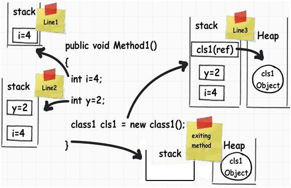

What is a StackOverflowError?
What is a StackOverflowError, what causes it, and how should I deal with
them?
Answer
Parameters and local variables are allocated on the stack (with reference types, the object lives on the heap and a variable in the stack references that object on the heap). The stack typically lives at the upper end of your address space and as it is used up it heads towards the bottom of the address space (i.e. towards zero).
Your process also has a heap , which lives at the bottom end of your process. As you allocate memory, this heap can grow towards the upper end of your address space. As you can see, there is a potential for the heap to "collide" with the stack (a bit like tectonic plates!!!).
The common cause for a stack overflow is a bad recursive call. Typically, this is caused when your recursive functions doesn't have the correct termination condition, so it ends up calling itself forever. Or when the termination condition is fine, it can be caused by requiring too many recursive calls before fulfilling it.
However, with GUI programming, it's possible to generate indirect recursion. For example, your app may be handling paint messages, and, whilst processing them, it may call a function that causes the system to send another paint message. Here you've not explicitly called yourself, but the OS/VM has done it for you.
To deal with them, you'll need to examine your code. If you've got functions that call themselves then check that you've got a terminating condition. If you have, then check that when calling the function you have at least modified one of the arguments, otherwise there'll be no visible change for the recursively called function and the terminating condition is useless. Also mind that your stack space can run out of memory before reaching a valid terminating condition, thus make sure your method can handle input values requiring more recursive calls.
If you've got no obvious recursive functions then check to see if you're calling any library functions that indirectly will cause your function to be called (like the implicit case above).
Suggest
To describe this, first let us understand how local variables and objects are stored.
Local variable are stored on the stack :

If you looked at the image you should be able to understand how things are working.
When a function call is invoked by a Java application, a stack frame is
allocated on the call stack. The stack frame contains the parameters of the
invoked method, its local parameters, and the return address of the method.
The return address denotes the execution point from which, the program
execution shall continue after the invoked method returns. If there is no
space for a new stack frame then, the StackOverflowError is thrown by the
Java Virtual Machine (JVM).
The most common case that can possibly exhaust a Java application’s stack is
recursion. In recursion, a method invokes itself during its execution.
Recursion is considered as a powerful general-purpose programming technique,
but it must be used with caution, to avoid StackOverflowError.
An example of throwing a StackOverflowError is shown below:
StackOverflowErrorExample.java:
public class StackOverflowErrorExample { public static void recursivePrint(int num) { System.out.println("Number: " + num); if (num == 0) return; else recursivePrint(++num); } public static void main(String[] args) { StackOverflowErrorExample.recursivePrint(1); } }
In this example, we define a recursive method, called recursivePrint that
prints an integer and then, calls itself, with the next successive integer as
an argument. The recursion ends until we pass in 0 as a parameter. However,
in our example, we passed in the parameter from 1 and its increasing
followers, consequently, the recursion will never terminate.
A sample execution, using the -Xss1M flag that specifies the size of the
thread stack to equal to 1 MB, is shown below:
Number: 1 Number: 2 Number: 3 ... Number: 6262 Number: 6263 Number: 6264 Number: 6265 Number: 6266 Exception in thread "main" java.lang.StackOverflowError at java.io.PrintStream.write(PrintStream.java:480) at sun.nio.cs.StreamEncoder.writeBytes(StreamEncoder.java:221) at sun.nio.cs.StreamEncoder.implFlushBuffer(StreamEncoder.java:291) at sun.nio.cs.StreamEncoder.flushBuffer(StreamEncoder.java:104) at java.io.OutputStreamWriter.flushBuffer(OutputStreamWriter.java:185) at java.io.PrintStream.write(PrintStream.java:527) at java.io.PrintStream.print(PrintStream.java:669) at java.io.PrintStream.println(PrintStream.java:806) at StackOverflowErrorExample.recursivePrint(StackOverflowErrorExample.java:4) at StackOverflowErrorExample.recursivePrint(StackOverflowErrorExample.java:9) at StackOverflowErrorExample.recursivePrint(StackOverflowErrorExample.java:9) at StackOverflowErrorExample.recursivePrint(StackOverflowErrorExample.java:9) ...
Depending on the JVM’s initial configuration, the results may differ, but
eventually the StackOverflowError shall be thrown. This example is a very
good example of how recursion can cause problems, if not implemented with
caution.
How to deal with the StackOverflowError
-
The simplest solution is to carefully inspect the stack trace and detect the repeating pattern of line numbers. These line numbers indicate the code being recursively called. Once you detect these lines, you must carefully inspect your code and understand why the recursion never terminates.
-
If you have verified that the recursion is implemented correctly, you can increase the stack’s size, in order to allow a larger number of invocations. Depending on the Java Virtual Machine (JVM) installed, the default thread stack size may equal to either 512 KB, or 1 MB. You can increase the thread stack size using the
-Xssflag. This flag can be specified either via the project’s configuration, or via the command line. The format of the-Xssargument is:-Xss<size>[g|G|m|M|k|K]